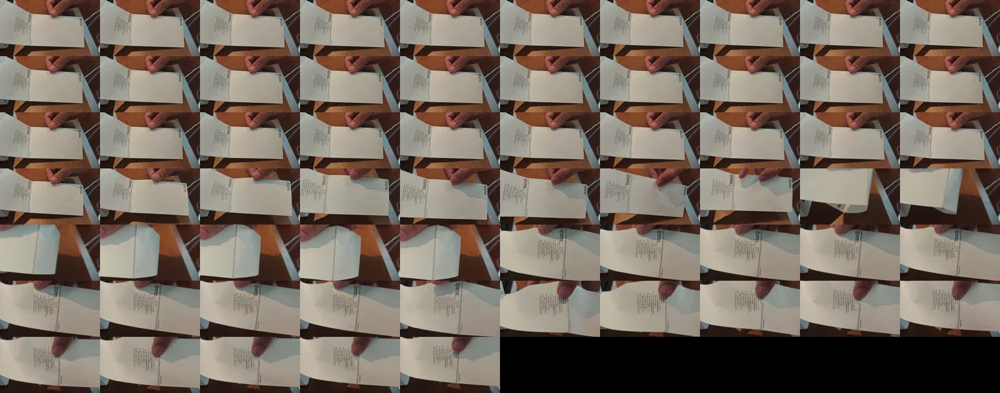
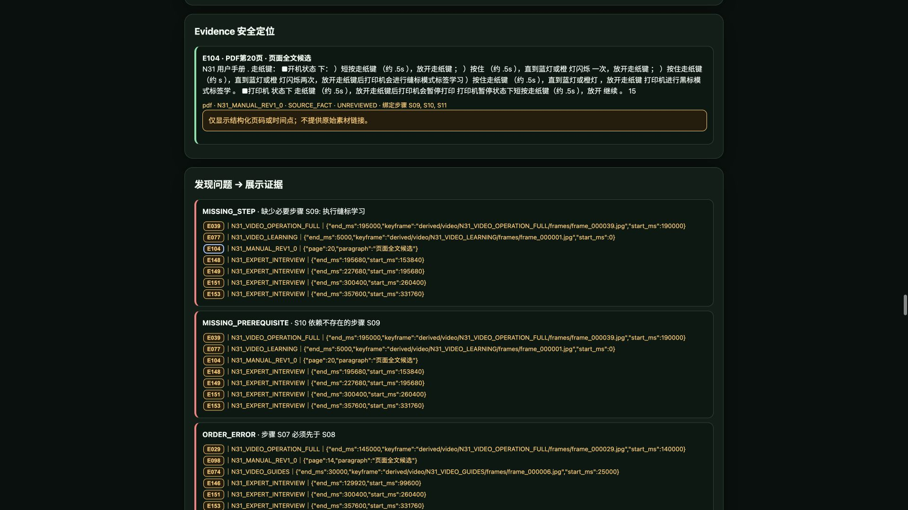

SkillForge 方法论系列 01/05 · 星星之火 · NVIDIA DGX SPARK 黑客松 2026
一个你一定经历过的场景
领导说："用AI写一份设备操作教程，明天给我。"
你打开大模型，输入"请写一份XX打印机更换标签纸的操作规程"，三秒钟，一篇排版漂亮、步骤清晰的文档出来了。你挺满意，发给车间老张看了一眼。
老张扫了三十秒，说："介质学习呢？这步漏了，打出来全是歪的。还有，导纸夹宽度你写的'适当调整'——什么叫适当？新人知道调到几毫米？"
你回去让AI补。AI补了一版，多了个"根据纸张宽度调整导纸夹"。老张又摇头："它说的'纸张宽度'是哪个宽度？标签宽还是底纸宽？我们用的是72毫米标签、130毫米高度，折叠纸不是卷筒纸——这些它知道吗？"
你沉默了。AI确实不知道。它基于训练语料里几千篇类似文本的统计规律，拼出一段"看起来像教程"的东西。但它没有"看过"你们车间那台具体的打印机，没有"听过"老师傅说"这个夹子别拧太紧不然走纸会偏"，更没有"翻过"那本58页手册的第20页。
更致命的是：你没法快速验证AI写的每一句话到底对不对。13个步骤，每步涉及工具名、参数值、警告语、完成标准——你要么自己全懂，要么逐条翻手册对照。前者你做不到，后者花的时间比自己写还长。
问题的本质：不是生成能力不够，是知识来源没接上
大模型的生成能力已经足够强了。给它正确的输入，它能写出比大多数人更好的文案。问题从来不是"它会不会写"，而是"它基于什么在写"。

N31操作视频连续帧：6段自摄安全视频的真实操作画面没有接入真实来源的AI写作，本质上是"高级复读机"——把训练数据里类似文本的公共知识重新排列组合。公共知识能覆盖80%的通用内容，但真正让培训有效的，恰恰是那20%的现场细节：这台具体设备的脾气、这个具体环境的注意事项、这位具体师傅踩过的坑。
我们的做法：证据先于结论
做 SkillForge 时，我们定下的第一条铁律是：先建证据库，再写任何一句话。
不是"先让AI写一版，再人工核实"——那样核实成本比自己写还高。而是在生成之前，就把所有来源材料拆解成统一的、可定位的"证据"（Evidence）。
每条证据有三个硬属性：
- 来源类型：视频、PDF手册、还是口述录音
- 精确定位：视频第几秒到第几秒、手册第几页、录音哪个时间段
- 内容摘要：这条证据具体说了什么
后续所有生成内容都必须引用这些证据。模型不能自己编，没有来源的句子不会出现在最终成品里。不是"生成完了让你去查"，是"没有依据的根本不会生成"。
这个设计看起来简单，但它彻底改变了审核成本：你不需要逐句验证"这句话对不对"，只需要检查"哪些步骤的证据覆盖不足"。前者是O(n)的逐句扫描，后者是O(k)的异常定位——k远小于n。
真实数据：汉印N31换纸案例
我们的主案例是"汉印N31电子面单打印机更换标签纸、介质学习与试印验收"。听起来简单——换纸谁不会？但真正做对需要13个步骤，漏掉任何一步都可能打出一沓废品。

Web演示中的Evidence详情：每条证据精确到PDF页码、视频秒数或录音时间段输入材料：
- 6段自摄安全视频（总时长约5分钟，一镜到底，经过本地隐私处理）
- 2份设备手册（共58页，形成607个页码绑定结构块，其中9页做了本地中文OCR）
- 12段专家口述录音（由实际操作者录制，覆盖装纸、调夹、学习、试印全过程）
Perception Agent 使用5种工具完成提取：PDF_PAGE_LOOKUP 保留手册原页码并建立可检索结构；KEYFRAME_LOOKUP 和 VIDEO_INTERVAL_LOOKUP 在 DGX Spark 上筛选视频关键帧和时间区间；AUDIO_INTERVAL_LOOKUP 处理录音时间戳；EVIDENCE_SEARCH 执行跨源检索。
最终提取出33条候选证据：视频18条、手册7条、口述8条。每条都带着精确的时间或页码定位，后续任何环节都可以回溯到原始素材的具体位置。
DGX本地计算：视频不出门
视频处理在 NVIDIA DGX Spark 的 GB10 上完成。6段视频、420帧画面、筛出50个候选时间点，端到端13秒。使用 CUDA 13 原生内核，不依赖Docker。
 DGX Spark本地视觉计算：6段视频、420帧、50个候选时间点、端到端13秒
DGX Spark本地视觉计算：6段视频、420帧、50个候选时间点、端到端13秒
这里有一个重要边界：GPU 只负责"哪些画面变化大，值得看"——它是候选筛选，不是事实判断。亮度分数、边缘检测值不会被写成"操作事实"。真正"看懂了什么"，是 Agent 结合手册和口述来判断的。
机器筛选是候选，不是结论。这个区分很重要：如果直接把GPU输出当成事实，你会得到一堆"第3秒到第5秒画面变化较大"的 meaningless 信息。只有把它跟手册第20页"按下走纸键，打印机自动学习标签间距"对应起来，它才变成有意义的证据。
为什么强调本地？因为操作视频是敏感材料。工厂产线、医院手术间、物流仓库的操作画面，不能随便上传到云端API。DGX Spark 让视频处理在内网完成，原始文件不出机器。对数据安全有要求的场景，这不是加分项，是准入门槛。
为什么不能"先写再查"
很多人用AI的方式是：先让它生成一版，再人工逐句核实。
算一笔账：AI生成一篇1000字教程用了3秒。你逐句核实13个步骤、每步的工具名、参数值、警告语、完成标准，对照手册翻页码、对照视频找时间点——花了40分钟。
这40分钟里，你本质上是在做"证据回溯"。区别是：如果系统在建库阶段就做好了证据绑定，这40分钟可以缩短到5分钟——你只需要看"哪些步骤证据不足"，而不是逐句验证每句话。
证据先于结论的好处：生成阶段就已经被约束住了。没有来源的句子根本不会出现在成品里，而不是"出现了再让你去查"。
你能带走的
不管你用不用AI，不管你是写培训教程、技术文档还是操作手册，这个原则都适用：
任何知识输出，先问"这句话的依据在哪一页、第几秒"。
答不上来的，要么补来源，要么删掉。没有第三种选择。
具体操作建议：
- 动手写之前，先把所有参考材料列出来，标注页码或时间点
- 每个关键结论旁边标注来源编号（哪怕是手写的"[手册P20]"）
- 没有来源的结论，标记为"待确认"而不是直接采信
- 最终发布前，检查是否还有"待确认"项未关闭
- 如果用了AI辅助生成，把"核实来源"的时间预算提前到生成之前，而不是之后
这不是效率问题，是信任问题。你的培训对象凭什么相信这份材料？凭每一句都能追到出处。
SkillForge（匠传）· 团队：星星之火 · NVIDIA DGX SPARK 黑客松 2026 代码：github.com/sparklefire/SkillForge 下一篇：《手册写了80%，师傅说了90%，合在一起才100%》——多源交叉印证方法论